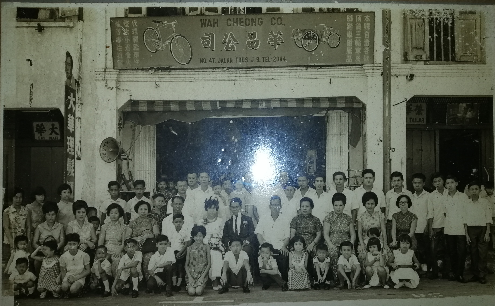
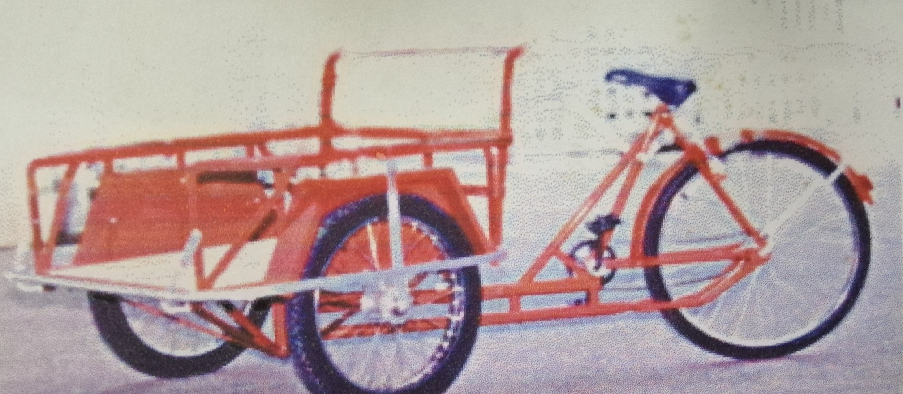
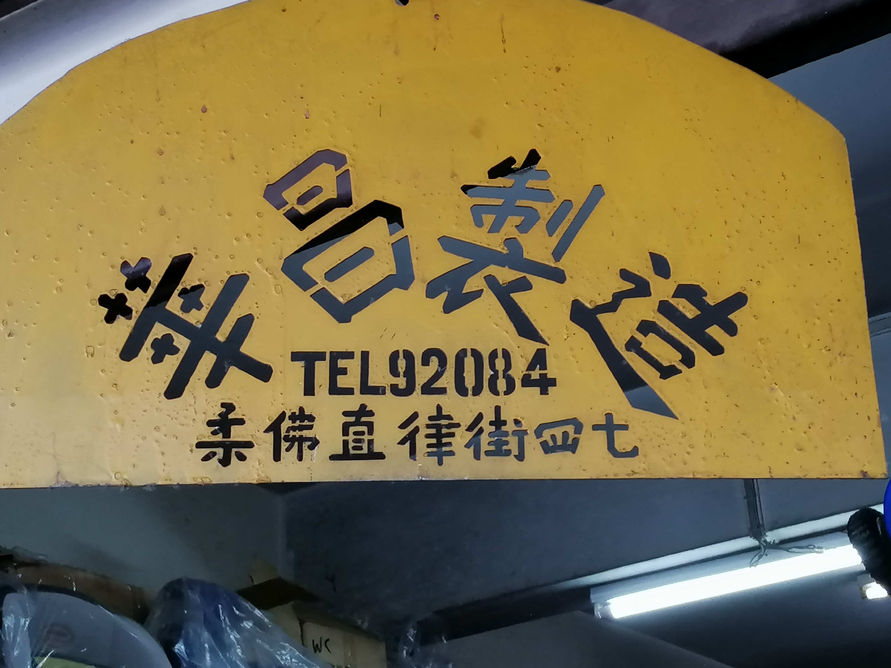
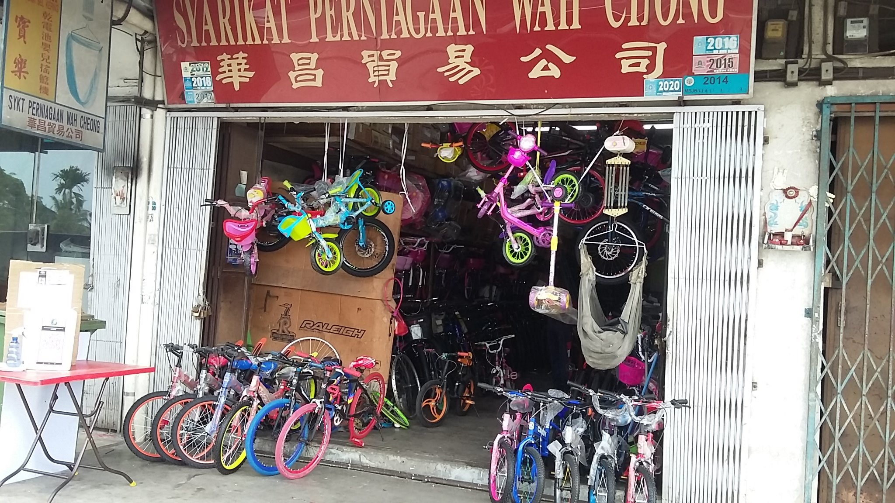
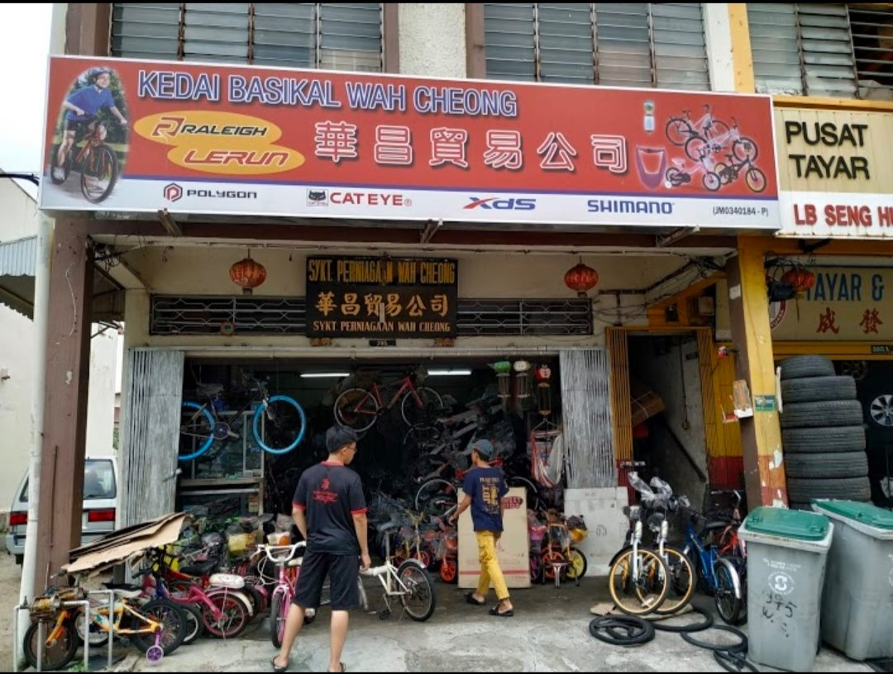
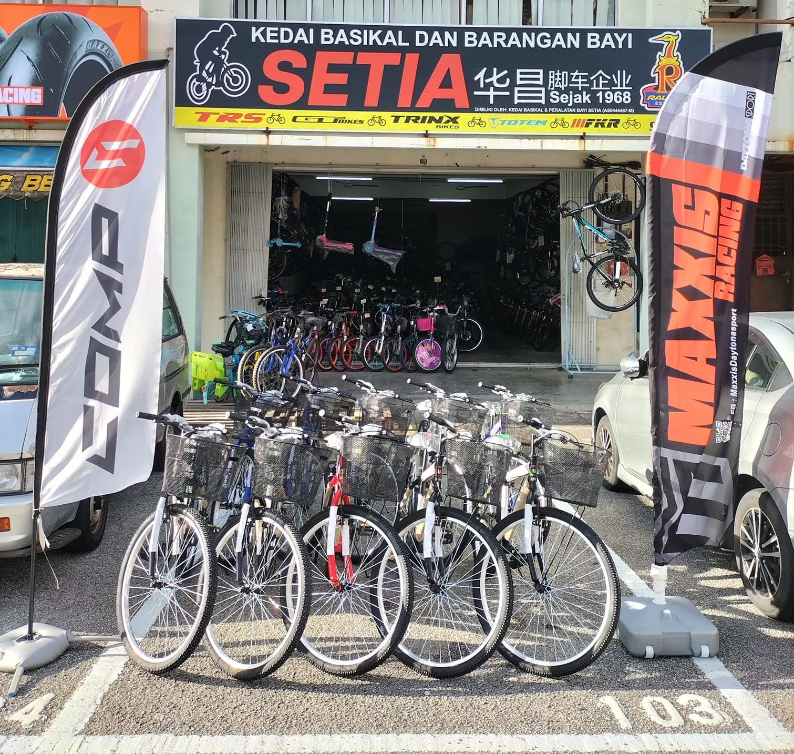

Our History
1930s
The first Wah Cheong Bicycle Shop officially opened in the 1930s and was founded by
Mr.Tan Kim Ruan(陈金銮先生) in Jalan Trus.
1945

Mr. Tan Kim Ruan(陈金銮先生) was killed by the Japanese in 1945, and the Wah Cheong Bicycle Shop was taken over by his elder brother Mr. Tan Kim Sheng(陈金声先生).
1950


Mr. Tan Kin Seng(陈金声先生) opened a bicycle factory on Jalan Skudai in the 1960s, producing tricycles and various bicycle frames, which were sold throughout Malaysia. The bicycle shop located at Jalan Trus 47 was handed over to Mr. Tan Guang Rong(陈光荣先生) to take care of it. After each tricycle, an iron plate marked "Made in Wah Cheong" is hung on the back of each tricycle, and then sent to Wah Cheong Bicycle Shope for sale. This kind of tricycle was the main means of transportation at that time, and it could be used whether it was carrying people or transporting goods.1981
In 1981, the new Wah Cheong bicycle shop was open by Mr. Tan Guang Ming(陈光明先生) at 395,Jalan Tebrau,
Taman Majidee.He is the son of Mr. Tan Kim Sheng(陈金声先生).
1993

In 1993, Mr. Tan Guang Ming(陈光明先生) opened another Wah Cheong Bicycle Shop at 4, jalan cemperai kampung baru pandan of his youngest son Mr. Tan Chze Hong(陈志鸿先生).Follow Facebook Page

2001

In 2001, Mr. Tan Guang Ming(陈光明先生) passed away, leaving the shop to his eldest son, Mr. Tan Boon Pio(陈闻彪先生).Follow Facebook Page
2022

In 2022, the son of Mr. Tan Chze Hong(陈志鸿先生) open a bicycle shop Kedai Basikal & Peralatan Bayi Setia (Wah Cheong) for his son Mr. Tan Yuan Bing(陈元彬先生) at Taman Setia Indah.Follow Facebook Page